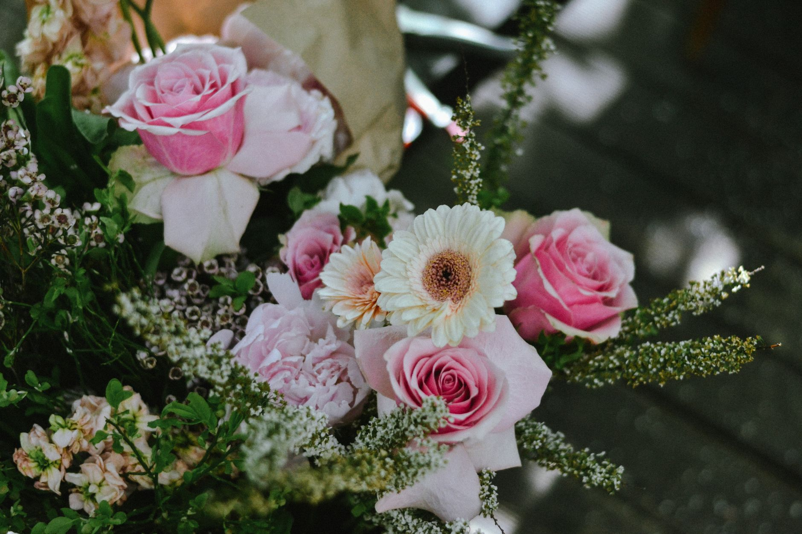
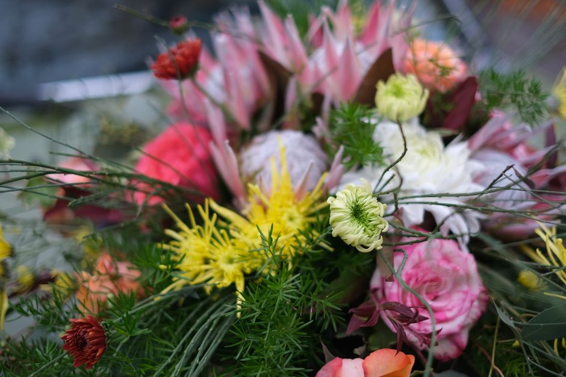
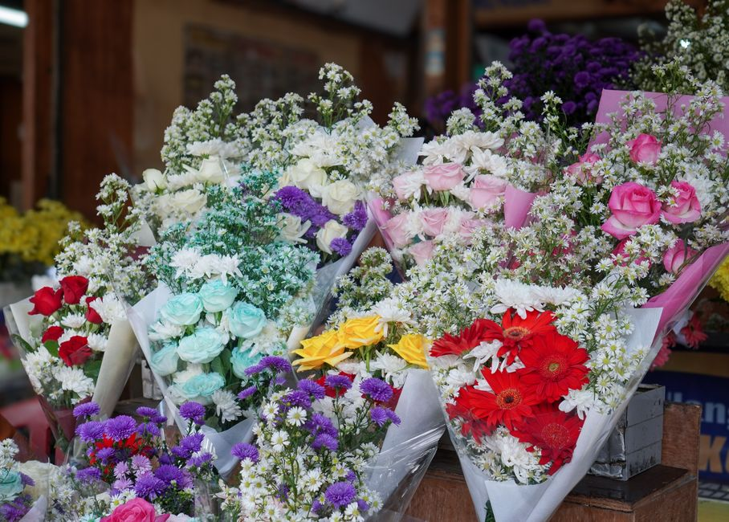
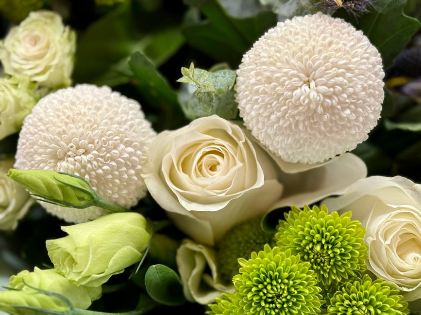
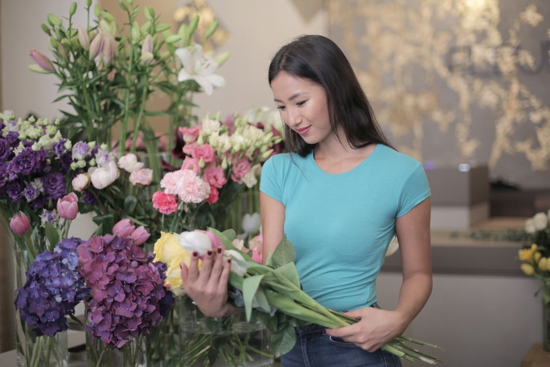
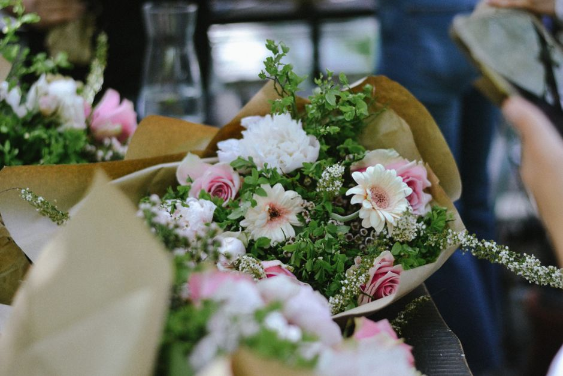
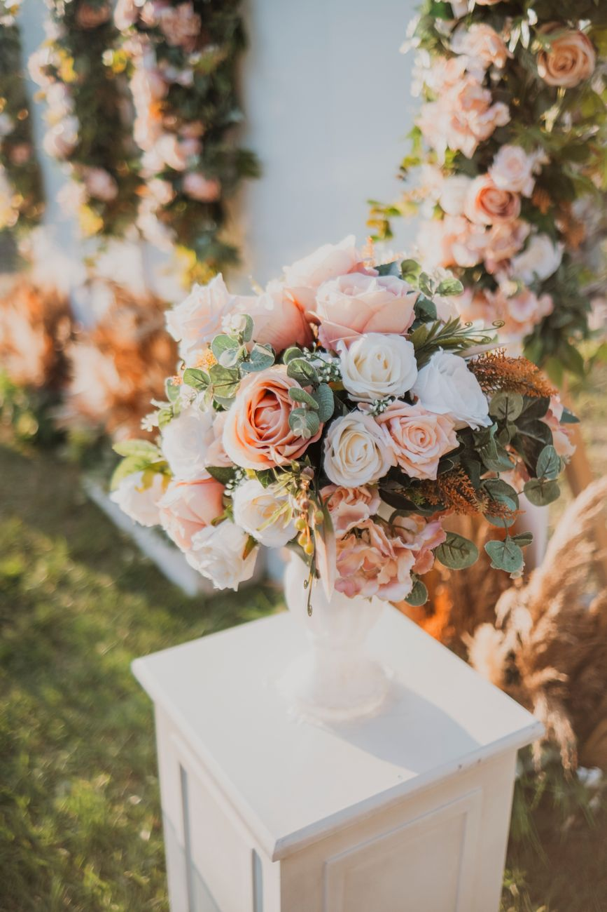

Geburtstag
Fröhliche, farbenfrohe Sträuße, die zum Geburtstagskind und seiner Lieblingsfarbe passen.
Floristik aus Kiel







Fröhliche, farbenfrohe Sträuße, die zum Geburtstagskind und seiner Lieblingsfarbe passen.
Romantische Arrangements mit Rosen und feinen Akzenten für den besonderen Moment zu zweit.
Was gerade blüht: Tulpen im Frühjahr, Dahlien im Spätsommer, Amaryllis zur Weihnachtszeit.
Freundliche, langlebige Sträuße, die auch am Krankenbett lange schön bleiben und Mut machen.
Zarte Sträuße in sanften Tönen, gern in Rosa, Blau oder frischem Weiß zum Willkommensgruß.
Würdevolle Kränze, Trauergestecke und Sargschmuck, individuell und mit persönlicher Beratung.
Vom Brautstrauß über Anstecker bis zur kompletten Tisch- und Raumdekoration – alles aus einer Hand.
Regelmäßiger Blumenschmuck für Empfang, Praxis oder Restaurant – zuverlässig und gepflegt.
Grünpflanzen und Blüher für Zuhause, inklusive Tipps zu Standort und Pflege.
Langlebige Sträuße und Kränze aus Trockenblumen, die monatelang schön bleiben.
Arrangements in Schale oder Vase für Tafel, Fensterbank oder als Mitbringsel.
Zustellung im Kieler Stadtgebiet und Umland – auf Wunsch mit persönlicher Grußkarte.

Seit Jahren binden wir in unserer Kieler Werkstatt Sträuße und Gestecke, die nicht nach Massenware aussehen. Jeder Strauß entsteht frei Hand, abgestimmt auf Anlass, Farbwunsch und das, was die Saison gerade hergibt.
Wir arbeiten bevorzugt mit regionalen Erzeugern und holen unsere Schnittblumen mehrmals pro Woche frisch. Was heute nicht schön genug ist, kommt nicht in den Strauß – so einfach ist das bei uns.
Auf Deutsch · English · Español
Ja, wenn die Bestellung bis 11 Uhr bei uns eingeht, liefern wir im Kieler Stadtgebiet in der Regel noch am selben Tag. Rufen Sie am besten kurz an, dann klären wir Uhrzeit und Adresse direkt.
Sehr gern. Nennen Sie uns Anlass, Farbwelt, ungefähres Budget und ob es eher schlicht oder üppig sein soll – den Rest übernehmen wir. Auch Wunschblumen versuchen wir, für Sie zu beschaffen.
Ja. Von Brautstrauß und Anstecker über Tischdeko bis zur Kirchen- oder Locationdekoration planen wir alles mit Ihnen zusammen. Ein persönliches Beratungsgespräch ist dabei kostenlos.
Ob spontaner Gruß, Trauerfloristik oder Ihre Hochzeit – schreiben Sie uns oder rufen Sie an. Wir beraten Sie ehrlich und finden das Passende.